Game Highlights
Memorable Moments
-
2019 ICC Cricket World Cup Final: England won their first Cricket World Cup in a dramatic final against New Zealand, decided by a boundary count after a tied Super Over.
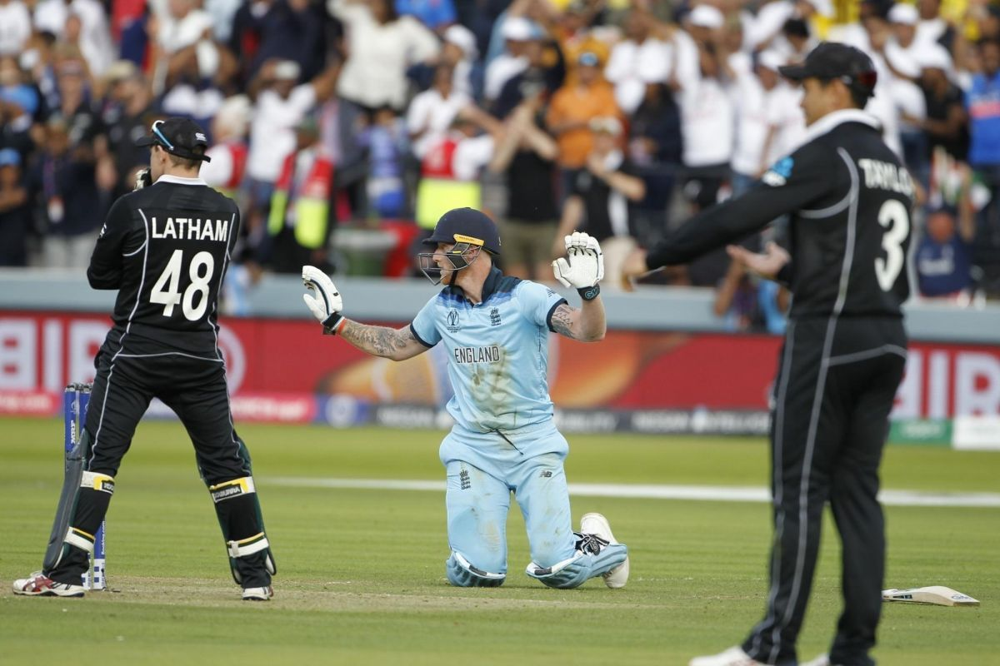 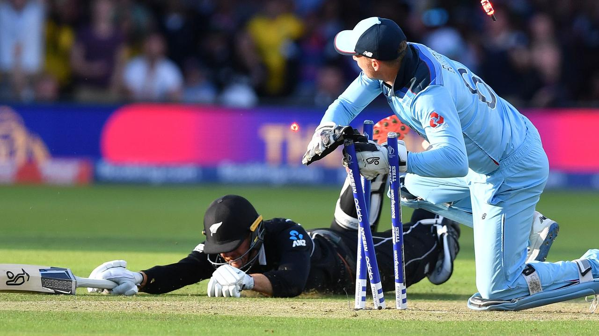 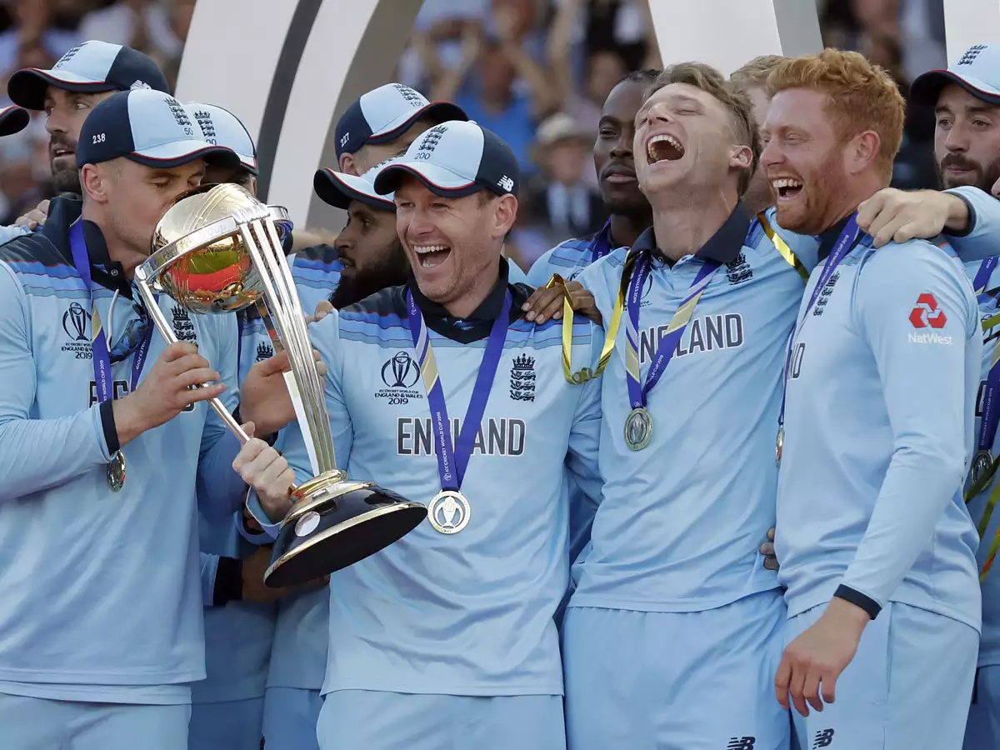 -
2024 ICC T20 WorldCup: India ended their 11 year drought for an ICC trophy with a dramatic win over South Africa by 7 runs.
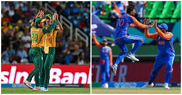 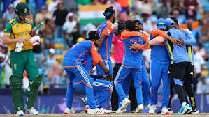 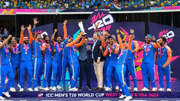 -
Tendulkar's 100th International Century: Sachin Tendulkar, one of the greatest batsmen of all time, achieved a historic milestone by scoring 100 international centuries.
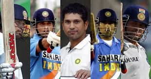 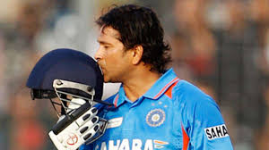
Key Players
|
Sachin Tendulkar: Known as the "God of Cricket", Tendulkar holds numerous records, including the most runs in both ODI and Test cricket. |
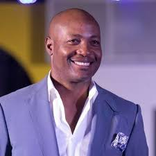
Brian Lara: Renowned for his incredible batting prowess, Lara holds the record for the highest individual score in a Test match (400 not out). |

Virat Kohli: One of the modern greats, Kohli is known for his consistency and ability to chase down targets with ease. |

Rohit Sharma: One of the modern greats alongside Kohli, known as the "Hitman" due to his ability to hit sixes at will. Holds the record for the highest score (264) in an ODI. |

MS Dhoni: India's most successful captain, known for his calm demeanor and exceptional leadership, particularly in limited-overs cricket. |
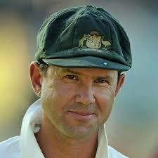
Ricky Ponting: Australia's most successful captain in World Cups, led his team to multiple victories with his aggressive batting and strategic acumen. |
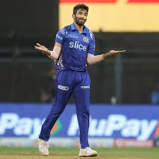
Jasprit Bumrah: Renowned for his unique bowling action and consistency, Bumrah has become one of the best fast bowlers in contemporary cricket. |
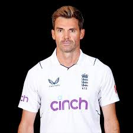
James Anderson: Considered one of the greatest swing bowlers in cricket history, He has uprooted wickets of three generations of the game. |
Important Tournaments
|
ICC Cricket World Cup: The premier international championship of men's cricket, held every four years. |
|
ICC T20 World Cup: A global championship of Twenty20 cricket, showcasing the best teams in the shortest format of the game. |
|
The Ashes: A Test cricket series played between England and Australia, one of the oldest and most celebrated rivalries in the sport. |
|
Border Gavaskar Trophy: A Test cricket series played between India and Australia, it is one of the greatest rivalries in the sport. |
|
Pataudi Trophy: A Test cricket series played between India and England. |
|
Domestic: Tournaments within the nation like IPL, BBL, CPL e.t.c. |
Statistics and Records
Sachin Tendulkar: Most runs in ODI (18,426) and Test cricket (15,921).
Muttiah Muralitharan: Highest wicket-taker in Test cricket (800 wickets).
Don Bradman: Highest batting average in Test cricket (99.94).